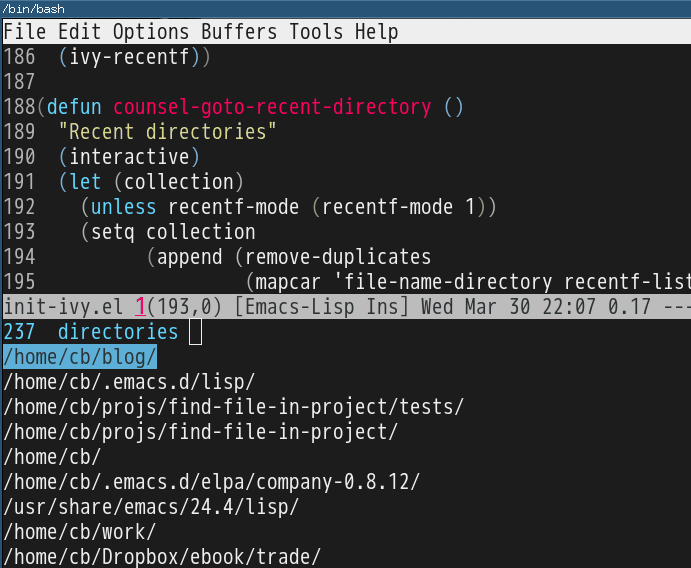

How to manage Emacs packages effectively
I developed a few package managing techniques after reading Steve Purcell's Emacs setup.
The techniques are compatible with other plugin (use-package, for example) based on package.el.
Emacs Lisp knowledge is required to read this article.
1 Technique 1, Do NOT use package.el for certain packages
Create directory site-lisp at ~/.emacs.d, then insert below code into ~/.emacs.d/init.el,
(if (fboundp 'normal-top-level-add-to-load-path)
(let* ((my-lisp-dir "~/.emacs.d/site-lisp/")
(default-directory my-lisp-dir))
(progn
(setq load-path
(append
(loop for dir in (directory-files my-lisp-dir)
unless (string-match "^\\." dir)
collecting (expand-file-name dir))
load-path)))))
You can create a sub-directory under ~/.emacs.d/site-lisp/ and place your package's source code inside that sub-directory.
2 Technique 2, Create your own package repository
Step 1, Place two files "archive-contents" and "hello-1.0.0.el" in any directory. Say ~/.emacs.d/localelpa.
Content of archive-contents:
(1
(hello . [(1 0 0) nil "Say hello" single])
)
Content of hello-1.0.0.el:
;;;###autoload
(defun hello-say ()
(interactive)
(message "Hi, hello!"))
(provide 'hello)
Step 2, insert below code into ~/.emacs,
(add-to-list 'package-archives '("localelpa" . "~/.emacs.d/localelpa"))
Step 3, restart Emacs and press M-x list-packages. As you can see, you can install package hello from repository ~/.emacs.d/localelpa.
I'm using rainbow-mode from ELPA(https://elpa.gnu.org/). But ELPA which shuts down sometimes. With above technique, my setup is never dependent on the reliability of GNU's website.
I also create plugin elpa-mirror which creates a local repository from all the installed packages. The local repository could also be converted to remote repository easily using Dropbox and Github.
It also solve the issue of orphan package. In order to get a clean setup without orphan packages, you only need delete everything from ~/.emacs.d/elpa and set the repository to the local one build by elpa-mirror. It takes 30 seconds to install 300 packages.
3 Technique 3, advice package--add-to-archive-contents to filter packages
Insert below code into ~/.emacs,
;; List of VISIBLE packages from melpa-unstable (http://melpa.org)
;; Feel free to add more packages!
(defvar melpa-include-packages
'(bbdb
color-theme
company-c-headers)
"Don't install any mELPA packages except these packages")
(defvar package-filter-function nil
"Optional predicate function used to internally filter packages used by package.el.
The function is called with the arguments PACKAGE VERSION ARCHIVE, where
PACKAGE is a symbol, VERSION is a vector as produced by `version-to-list', and
ARCHIVE is the string name of the package archive.")
;; Don't take MELPA versions of certain packages
(setq package-filter-function
(lambda (package version archive)
(or (not (string-equal archive "melpa"))
;; install package in whitelist
(memq package melpa-include-packages)
;; use all color themes
(string-match (format "%s" package) "-theme"))))
(defadvice package--add-to-archive-contents
(around filter-packages (package archive) activate)
"Add filtering of available packages using `package-filter-function', if non-nil."
(when (or (null package-filter-function)
(funcall package-filter-function
(car package)
(funcall (if (fboundp 'package-desc-version)
'package--ac-desc-version
'package-desc-vers)
(cdr package))
archive))
ad-do-it))
Above code hide the packages which don't meet our criteria.
The criteria is just a simple boolean expression defined in package-filter-function.
We install packages if it's NOT from melpa-unstable OR it's listed in melpa-include-packages OR its name contains "-theme" (it's color theme package).
Feel free to use any boolean expression to filter packages.
The initial version of above code was copied Steve Purcell's setup years ago.
I developed my own strategy based on his code. The first thing I did is reverse his logic. In his code melpa-unstable take the highest priority while in my code melpa-unstable takes the lowest priority.
4 Summary
You can combine my techniques to solve any package problem.
For example, package A is dependent on package B. Both A and B have two versions, 1.0 and 2.0:
- A 2.0 can use B 1.0 and B 2.0, but A 1.0 can ONLY use B 1.0
- A 2.0 can ONLY use B 2.0, and A 1.0 can only use B 1.0
The solution is simple. We create a local repository to host B 1.0 and A 1.0 (Technique 2), then in package-filter-function (Technique 3), we will decide which version of to use the with information collected from B. As I said, package-filter-function only returns a boolean expression. So you can design any strategy.
I know somebody believed Emacs is worse than IDE because its package manager after "studying" it for seven years.
It took me fifteen minutes to reach the opposite conclusion when I was still absolute Emacs dummy.
It's possibly I learned the Emacs by cloning and reading code. You can read my guide "Master Emacs In One Year" for more details.
New git-timemachine UI based on ivy-mode
When I use git-timemachine, I prefer start from my selected revision instead of HEAD.
Here is my code based on ivy-mode,
(defun my-git-timemachine-show-selected-revision ()
"Show last (current) revision of file."
(interactive)
(let (collection)
(setq collection
(mapcar (lambda (rev)
;; re-shape list for the ivy-read
(cons (concat (substring (nth 0 rev) 0 7) "|" (nth 5 rev) "|" (nth 6 rev)) rev))
(git-timemachine--revisions)))
(ivy-read "commits:"
collection
:action (lambda (rev)
(git-timemachine-show-revision rev)))))
(defun my-git-timemachine ()
"Open git snapshot with the selected version. Based on ivy-mode."
(interactive)
(unless (featurep 'git-timemachine)
(require 'git-timemachine))
(git-timemachine--start #'my-git-timemachine-show-selected-revision))
Screenshot after M-x my-git-timemachine,

Complete line with ivy-mode
Complete current line by git grep and ivy-mode.
(defun counsel-escape (keyword)
(setq keyword (replace-regexp-in-string "\\$" "\\\\\$" keyword))
(replace-regexp-in-string "\"" "\\\\\"" keyword))
(defun counsel-replace-current-line (leading-spaces content)
(beginning-of-line)
(kill-line)
(insert (concat leading-spaces content))
(end-of-line))
(defun counsel-git-grep-complete-line ()
(interactive)
(let* (cmd
(cur-line (buffer-substring-no-properties (line-beginning-position)
(line-end-position)))
(default-directory (locate-dominating-file
default-directory ".git"))
keyword
(leading-spaces "")
collection)
(setq keyword (counsel-escape (if (region-active-p)
(buffer-substring-no-properties (region-beginning)
(region-end))
(replace-regexp-in-string "^[ \t]*" "" cur-line))))
;; grep lines without leading/trailing spaces
(setq cmd (format "git --no-pager grep -I -h --no-color -i -e \"^[ \\t]*%s\" | sed s\"\/^[ \\t]*\/\/\" | sed s\"\/[ \\t]*$\/\/\" | sort | uniq" keyword))
(when (setq collection (split-string (shell-command-to-string cmd) "\n" t))
(if (string-match "^\\([ \t]*\\)" cur-line)
(setq leading-spaces (match-string 1 cur-line)))
(cond
((= 1 (length collection))
(counsel-replace-current-line leading-spaces (car collection)))
((> (length collection) 1)
(ivy-read "lines:"
collection
:action (lambda (l)
(counsel-replace-current-line leading-spaces l))))))
))
(global-set-key (kbd "C-x C-l") 'counsel-git-grep-complete-line)
I also tried grep which is too slow for my project.
Make Messages Buffer modifiable in Emacs 24.4
(defadvice switch-to-buffer (after switch-to-buffer-after-hack activate)
(if (string= "*Messages*" (buffer-name))
(read-only-mode -1)))
How to input Non-English character in evil-mode efficiently
You can M-x toggle-input-method or C-\ to input Non-English characters.
Analysis about evil-mode,
- You only input Non-English characters in evil-insert-state. So you need go into evil-insert-state at first before toggle on input method
- In evil-insert-state, you can toggle off input method to input English characters while staying in evil-insert state
- When press
ESC, you quit from evil-insert-state. But input method could be still activated. So when you re-enter evil-insert-state, you need notification of input method status
Here is the setup,
;; {{ make IME compatible with evil-mode
(defun evil-toggle-input-method ()
"when toggle on input method, goto evil-insert-state. "
(interactive)
;; load IME when needed, less memory footprint
;; (unless (featurep 'chinese-pyim)
;; (require 'chinese-pyim))
(cond
((and (boundp 'evil-mode) evil-mode)
;; evil-mode
(cond
((eq evil-state 'insert)
(toggle-input-method))
(t
(evil-insert-state)
(unless current-input-method
(toggle-input-method))
))
(if current-input-method (message "IME on!")))
(t
;; NOT evil-mode, some guy don't use evil-mode at all
(toggle-input-method))))
(defadvice evil-insert-state (around evil-insert-state-hack activate)
ad-do-it
(if current-input-method (message "IME on!")))
(global-set-key (kbd "C-\\") 'evil-toggle-input-method)
;; }}
Chinese version:
在evil-mode中切换输入法有以下要点,
- 输中文前须进入evil-insert-state
- 在evil-insert-state中可能会切换输入法
- 按ESC退出evil-insert-state时输入法可能还开着,所以再进入evil-insert-state时需提示输入法状态
代码见上.
Swiper/Ivy tip
Please install evil-escape at first.
When Swiper/Ivy candidate window pops up. You can press fd quickly to close the window.
fd is the default key binding from evil-escape. I changed it to kj instead.
Use general.el to provide multiple leader key in evil-mode
General.el "provides a more convenient way to bind keys in emacs for both evil and non-evil users".
I have been using it for more than one month without any issue. I prefer general.el to evil-leader because I need both comma and space key as leader key.
Minimum setup is simple,
(require 'general)
(general-evil-setup t)
(nvmap :prefix ","
"bb" 'back-to-previous-buffer
"ww" 'save-buffer
"oo" 'compile)
;; all keywords arguments are still supported
(nvmap :prefix "SPC"
; save windows layout
"ss" 'wg-create-workgroup
;; load windows layout
"ll" 'my-wg-switch-workgroup)
My real world setup is more complicated.
Use ivy to open recent directories
The recent directories include parent directories of opened files in Emacs and the directories accessed in Bash shell.
I used fasd to get the list of directories in shell. Fasd "offers quick access to files and directories for POSIX shells".
Here is my setup,
(require 'ivy) ; swiper 7.0+ should be installed
(defun counsel-goto-recent-directory ()
"Open recent directory with dired"
(interactive)
(unless recentf-mode (recentf-mode 1))
(let ((collection
(delete-dups
(append (mapcar 'file-name-directory recentf-list)
;; fasd history
(if (executable-find "fasd")
(split-string (shell-command-to-string "fasd -ld") "\n" t))))))
(ivy-read "directories:" collection :action 'dired)))
Screenshot:

Emacs vs Sublime Text on Salesforce development
Our client decided to move their legacy system to a cloud platform called salesforce.com. So I got a chance to investigate how to deploy code to the salesforce server inside Emacs and Sublime Text.
Salesforce provides a migration tool to deploy everything from the scratch which takes about 2 minutes. Basically makes it impossbile to be integrated with text editors.
Luckily, there is Force.com CLI which can upload single file in a few seconds. Both Sublime Text and Emacs use this tool.
1 Sublime Text
You need install sublime text plugin mavensmate. After installation, you need click Login menu at least once. Then when you save the code file, it's automatically deployed to the server.
For some reason, the logged in session will timeout after a couple minutes. So you need re-login. Sometimes deployment will fail, you could click the Fetch menu and fill in the component name into the popup window to confirm the fetch. Fetching will re-activate upload ability.
Mavensmate is actually just GUI wrapper of Force.com CLI,
- When you click login, the command
force loginis executed - When saving file,
force aura pushorforce pushis executed - When fetching,
force fetchis executed
2 Emacs
In Sublime Text I have to re-login and fetch from time to time. That get me distracted. I prefer executing only one commmand to upload the file in editing. That command should be always successful.
My solution is to combine "login/fetch/push" commnands into one liner which is stored in a file local variable compile-command. So when I execute M-x compile, the commands "login/fetch/push" in compile-command will all be executed sequentially. So I don't need care about login and fetch things any more.
Here is my setup,
(defun my-setup-develop-environment ()
(interactive)
(let (ffip-project-root)
(setq ffip-project-root "~/projects/my-salesforce-project1")
(when (memq major-mode '(web-mode js-mode js2-mode))
(setq-local compile-command
(cond
;; lightning controller javascript file
((string-match "Controller\.js$" (buffer-file-name))
(format "force login -i=test -u=username@salesforce.com -p=password1; cd %s && cp %s %s && force fetch -t Aura -n %s -d %s && mv %s %s && force aura push -f %s"
ffip-project-root
(buffer-file-name) (concat (buffer-file-name) ".bak")
(replace-regexp-in-string "Controller" "" (file-name-base (buffer-file-name)))
ffip-project-root
(concat (buffer-file-name) ".bak") (buffer-file-name)
(buffer-file-name)))
;; ant build
((string-match "build\.xml$" (buffer-file-name))
(format "cd %s && ant deployCode" ffip-project-root))
;; lightning html view
((string-match "\.cmp$" (buffer-file-name))
(format "force login -i=test -u=username@salesforce.com -p=password1; cd %s && force aura push -f %s"
ffip-project-root
(buffer-file-name)))
;; other salesforce pages
(t
(format "force login -i=test -u=username@salesforce.com -p=password1; cd %s && force push -f %s"
ffip-project-root
(buffer-file-name)))
)))
))
;; I use web-mode for html/xml
(add-hook 'web-mode-hook 'my-setup-develop-environment)
;; I use js2-mode for javascript
(add-hook 'js2-mode-hook 'my-setup-develop-environment)
How to be extremely efficient in Emacs
All you need to do is using keyfreq to measure how many time you execute commands.
The frequently used commands should be assigned efficient key bindings.
But you need exclude already optimized commands or commands which cannot be optimized before starting keyfreq.
For example, commands like next-line/previous-line/forward-char/backward-char could be excluded by tweaking variable keyfreq-excluded-commands.
The minimum keyfreq setup,
(require 'keyfreq)
(setq keyfreq-excluded-commands
'(self-insert-command
abort-recursive-edit
forward-char
backward-char
previous-line
next-line))
(keyfreq-mode 1)
(keyfreq-autosave-mode 1)
My actual keyfreq setup is more complicated.
Below is the eight month keyfreq data of my office computer,
| Times | Percentage | Command | Key |
|---|---|---|---|
| 4967 | 12.00% | evilmi-jump-items | % |
| 2892 | 6.99% | compile | , o o |
| 2178 | 5.26% | find-file-in-project-by-selected | , k k |
| 1953 | 4.72% | copy-to-x-clipboard | , a a |
| 1566 | 3.78% | paste-from-x-clipboard | , z z |
| 1227 | 2.96% | er/expand-region | , x x |
| 897 | 2.17% | evil-repeat | . |
| 866 | 2.09% | ido-find-file | , x f, C-x C-f |
| 819 | 1.98% | toggle-full-window | , f f |
| 815 | 1.97% | etags-select-find-tag-at-point | C-], , h t |
| 721 | 1.74% | back-to-previous-buffer | , b b |
| 682 | 1.65% | split-window-vertically | , x 2 |
| 539 | 1.30% | find-function | , h f, C-h C-f |
| 494 | 1.19% | counsel-recentf-goto | , r r |
| 397 | 0.96% | counsel-git-grep | , g g |
| 376 | 0.91% | delete-other-windows | , x 1, C-x 1 |
| 372 | 0.90% | evilnc-comment-or-uncomment-lines | , c i |
| 351 | 0.85% | eval-expression | , e e, M-: |
| 326 | 0.79% | evilmi-select-items | , s i |
| 320 | 0.77% | paredit-doublequote | |
| 307 | 0.74% | evil-filepath-outer-text-object | |
| 300 | 0.72% | steve-ido-choose-from-recentf | |
| 295 | 0.71% | split-window-horizontally | , x 3 |
| 283 | 0.68% | git-add-current-file | , x v a |
| 279 | 0.67% | winner-undo | , x u, , s u, C-x 4 u |
| 278 | 0.67% | describe-function | , h d, C-h f |
| 278 | 0.67% | evil-goto-mark-line | ' |
| 269 | 0.65% | ido-kill-buffer | , x k, C-x k |
| 254 | 0.61% | evil-goto-definition | g d |
| 253 | 0.61% | pop-tag-mark | M-* |
| 251 | 0.61% | git-messenger:popup-message | , x v b, C-x v p |
| 246 | 0.59% | my-goto-next-hunk | , n n |
| 237 | 0.57% | evilnc-comment-operator | , , |
| 235 | 0.57% | flyspell-goto-next-error | , f e, C-, |
| 214 | 0.52% | evil-exit-emacs-state | |
| 212 | 0.51% | browse-kill-ring-forward | |
| 210 | 0.51% | flyspell-buffer | , f b |
| 203 | 0.49% | evil-ex-completion | |
| 195 | 0.47% | narrow-or-widen-dwim | , x n n |
| 173 | 0.42% | comint-send-input | |
| 173 | 0.42% | beginning-of-defun | , b f |
| 170 | 0.41% | evil-surround-region | <visual-state> S |
| 161 | 0.39% | hippie-expand | M-/ |
| 151 | 0.36% | describe-key | , h k, C-h k |
| 149 | 0.36% | evil-space–evil-next-visual-line | SPC |
| 139 | 0.34% | gnus-topic-select-group | |
| 138 | 0.33% | js2-print-json-path | , j p p |
| 132 | 0.32% | goto-line | M-g g, M-g M-g |
| 132 | 0.32% | evil-avy-goto-subword-1 | ; |
| 127 | 0.31% | ibuffer-mark-for-delete | |
| 127 | 0.31% | evil-inner-single-quote | |
| 126 | 0.30% | isearch-other-meta-char | |
| 124 | 0.30% | term-send-up | |
| 118 | 0.29% | isearch-other-control-char | |
| 116 | 0.28% | evil-set-marker | m |
| 115 | 0.28% | browse-kill-ring | M-y, , y y |
| 114 | 0.28% | counsel-git-grep-yank-line | , g l |
| 114 | 0.28% | evil-window-down | C-w j |
| 112 | 0.27% | evil-jump-backward | C-o |
| 108 | 0.26% | evil-visual-block | C-v |
| 108 | 0.26% | evil-space–evil-previous-visual-line | S-SPC |
| 107 | 0.26% | comint-previous-input | |
| 98 | 0.24% | gnus-summary-exit | |
| 98 | 0.24% | evil-search-word-backward | # |
| 98 | 0.24% | forward-button | |
| 96 | 0.23% | evil-paste-pop-next | |
| 95 | 0.23% | ediff-next-difference | |
| 95 | 0.23% | ido-imenu | , i i |
| 92 | 0.22% | my-wg-switch-workgroup | , w g g |
| 90 | 0.22% | counsel-git-find-file | , g f |
| 90 | 0.22% | evilmi-delete-items | , d i |
| 87 | 0.21% | gnus-summary-extract-mail-address | |
| 87 | 0.21% | cliphist-paste-item | , h h |
| 84 | 0.20% | subword-backward-kill | <C-backspace> |
| 84 | 0.20% | paredit-backslash | |
| 83 | 0.20% | my-yas-reload-all | , y c r |
| 81 | 0.20% | pwd | |
| 80 | 0.19% | previous-complete-history-element | |
| 80 | 0.19% | wg-create-workgroup | , w g t |
| 78 | 0.19% | evil-forward-WORD-end | E |
| 77 | 0.19% | gnus-summary-scroll-up | |
| 76 | 0.18% | gnus-summary-extract-cc-and-to | |
| 75 | 0.18% | compile-goto-error | |
| 73 | 0.18% | evil-find-char-to | t |
| 72 | 0.17% | evil-repeat-find-char | |
| 69 | 0.17% | evil-window-up | C-w k |
| 67 | 0.16% | eval-last-sexp | , x e, C-x C-e |
| 66 | 0.16% | evil-complete-next-line | |
| 66 | 0.16% | exchange-point-and-mark | C-x C-x |
| 63 | 0.15% | direx:previous-item | |
| 61 | 0.15% | ediff-jump-to-difference | |
| 60 | 0.14% | diredp-next-line | |
| 58 | 0.14% | evilmr-replace-in-buffer | , r b |
| 58 | 0.14% | counsel-imenu-goto | , i m |
| 56 | 0.14% | evil-goto-mark | ` |
| 55 | 0.13% | gnus-group-unsubscribe-current-group | |
| 55 | 0.13% | ivy-bookmark-goto | |
| 55 | 0.13% | evil-filepath-inner-text-object | |
| 54 | 0.13% | describe-mode | C-h m |
| 54 | 0.13% | recenter-top-bottom | C-l |
| 54 | 0.13% | list-packages | |
| 52 | 0.13% | gnus-topic-mark-topic | |
| 52 | 0.13% | kill-line | C-k, <deleteline> |
| 51 | 0.12% | find-and-ctags-update-all-tags-force | |
| 50 | 0.12% | evil-paste-before | P |
| 49 | 0.12% | execute-extended-command | <execute>, C-x RET |
| 49 | 0.12% | etags-select-quit | |
| 49 | 0.12% | evil-inner-WORD | |
| 48 | 0.12% | find-tag | g C-] |
| 47 | 0.11% | diredp-previous-line | |
| 46 | 0.11% | paredit-close-square | |
| 44 | 0.11% | paredit-open-square | |
| 44 | 0.11% | evil-paste-last-insertion | |
| 42 | 0.10% | evil-inner-double-quote | |
| 42 | 0.10% | ivy-imenu-goto | |
| 40 | 0.10% | counsel-git-find-my-file | , g m |
| 39 | 0.09% | cp-filename-of-current-buffer | , f n |
| 39 | 0.09% | gnus-article-read-summary-keys | |
| 39 | 0.09% | isearch-nonincremental-exit-minibuffer | |
| 38 | 0.09% | sh-assignment | |
| 38 | 0.09% | mark-whole-buffer | , x h, C-x h |
| 38 | 0.09% | evilmi-inner-text-object | |
| 36 | 0.09% | evilnc-comment-or-uncomment-paragraphs | , c p, C-c p |
| 36 | 0.09% | evil-toggle-input-method | C-\ |
| 35 | 0.08% | org2nikola-export-subtree | |
| 35 | 0.08% | subword-forward | M-f, ESC <right> |
| 34 | 0.08% | evil-open-above | O |
| 34 | 0.08% | compose-mail | C-x m |
| 33 | 0.08% | evil-inner-paren | |
| 33 | 0.08% | term-send-raw-meta | |
| 33 | 0.08% | evil-invert-char | ~ |
| 32 | 0.08% | evil-space–evil-repeat-find-char | |
| 32 | 0.08% | httpd-restart-at-default-directory | , w r d |
| 32 | 0.08% | cp-fullpath-of-current-buffer | , f p |
| 31 | 0.07% | evil-forward-WORD-begin | W |
| 30 | 0.07% | sort-lines | , s l |
| 30 | 0.07% | bmkp-w3m-jump | |
| 30 | 0.07% | evilnc-copy-and-comment-lines | , c c, C-c c |
| 29 | 0.07% | toggle-company-ispell | , t c i |
| 29 | 0.07% | top-level | |
| 28 | 0.07% | package-menu-mark-upgrades | |
| 27 | 0.07% | evil-numbers/dec-at-pt | - |
| 27 | 0.07% | end-of-defun | , e f, C-M-e |
| 27 | 0.07% | my-setup-develop-environment | |
| 26 | 0.06% | evil-paste-pop | |
| 25 | 0.06% | ediff-previous-difference | |
| 25 | 0.06% | evil-backward-WORD-begin | B |
| 25 | 0.06% | goto-char | g o, M-g c |
| 25 | 0.06% | w3m-close-window | |
| 25 | 0.06% | org-mime-htmlize | |
| 25 | 0.06% | gnus-group-exit | |
| 24 | 0.06% | git-gutter:toggle | C-x C-g |
| 23 | 0.06% | my-gnus-group-list-subscribed-groups | |
| 23 | 0.06% | find-directory-in-project-by-selected | , f d |
| 23 | 0.06% | evil-inner-curly | |
| 22 | 0.05% | org-edit-src-exit | |
| 22 | 0.05% | string-edit-at-point | , s e |
| 22 | 0.05% | package-menu-mark-delete | |
| 22 | 0.05% | ido-magic-forward-char | |
| 22 | 0.05% | run-js | , r j s |
| 22 | 0.05% | git-gutter-reset-to-head-parent | , g s h |
| 21 | 0.05% | counsel-read-history | |
| 21 | 0.05% | rcirc-send-input | |
| 21 | 0.05% | gnus-undo | |
| 21 | 0.05% | subword-backward | M-b |
| 20 | 0.05% | company-select-next | |
| 20 | 0.05% | what-cursor-position | g a, g 8, C-x = |
| 20 | 0.05% | my-grep | , q q |
| 20 | 0.05% | hydra-gnus-summary/body | |
| 19 | 0.05% | ansi-term | |
| 19 | 0.05% | evil-window-right | C-w l |
| 19 | 0.05% | debugger-jump | |
| 19 | 0.05% | wg-switch-to-workgroup | |
| 19 | 0.05% | yas-abort-snippet | |
| 19 | 0.05% | tags-loop-continue | M-, |
| 19 | 0.05% | swiper-the-thing | , s s |
| 18 | 0.04% | my-wg-swich-to-workgroup | |
| 18 | 0.04% | org-edit-special | |
| 17 | 0.04% | lisp-complete-symbol | |
| 17 | 0.04% | my-wg-switch-to-workgroup-at-index | |
| 17 | 0.04% | test | |
| 17 | 0.04% | ediff-scroll-vertically | |
| 16 | 0.04% | w3m-view-previous-page | |
| 16 | 0.04% | evil-window-left | C-w h |
| 16 | 0.04% | isearch-yank-kill | |
| 16 | 0.04% | my-goto-previous-hunk | , p p |
| 16 | 0.04% | js-beautify | , j b |
| 16 | 0.04% | hydra-launcher/body | |
| 16 | 0.04% | read-only-mode | C-x C-q |
| 16 | 0.04% | message-send-and-exit | |
| 16 | 0.04% | etags-select-goto-tag | |
| 15 | 0.04% | evil-next-match | g n |
| 15 | 0.04% | js2r-kill | , j j k |
| 15 | 0.04% | string-edit-conclude | |
| 15 | 0.04% | delete-char | |
| 14 | 0.03% | gnus-summary-limit-to-author | |
| 14 | 0.03% | ediff-swap-buffers |